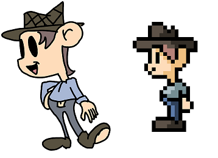
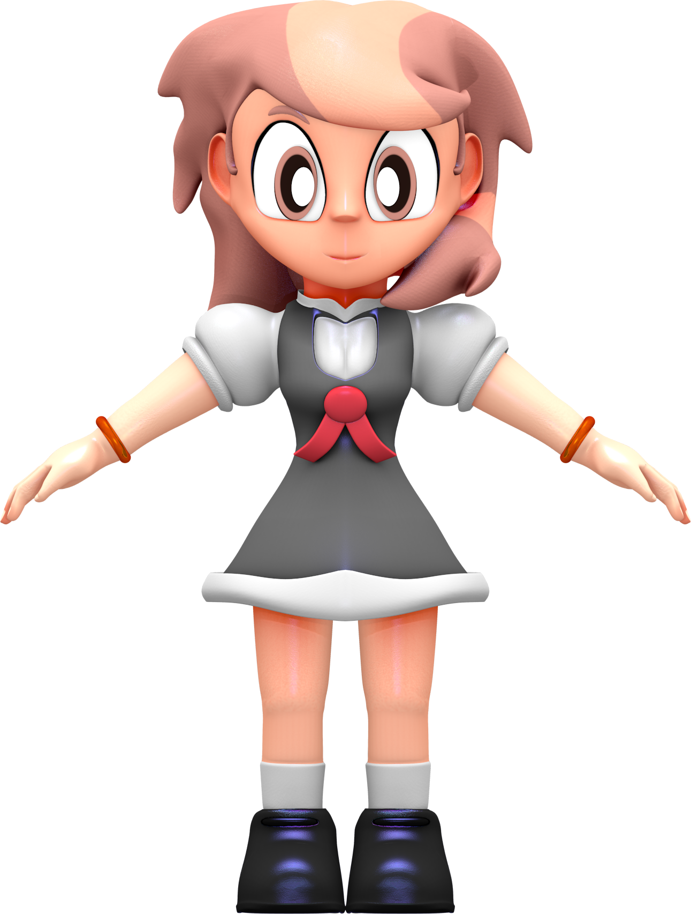
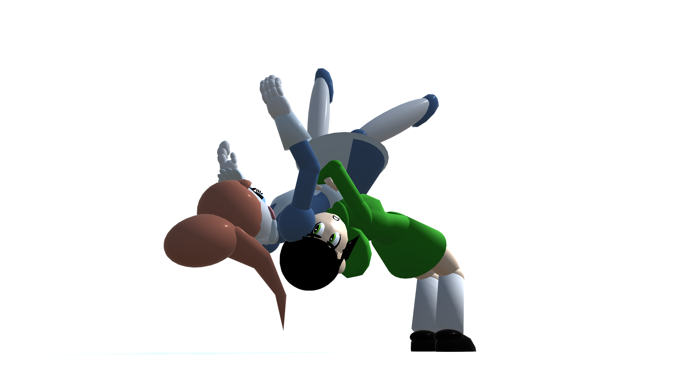
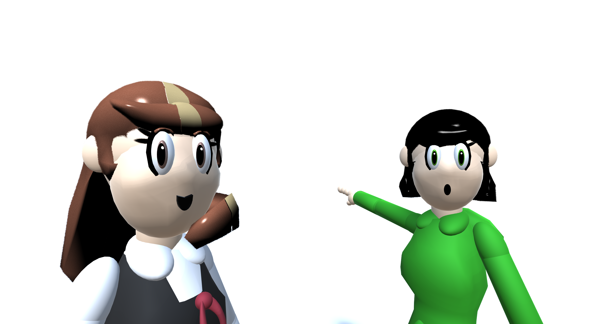
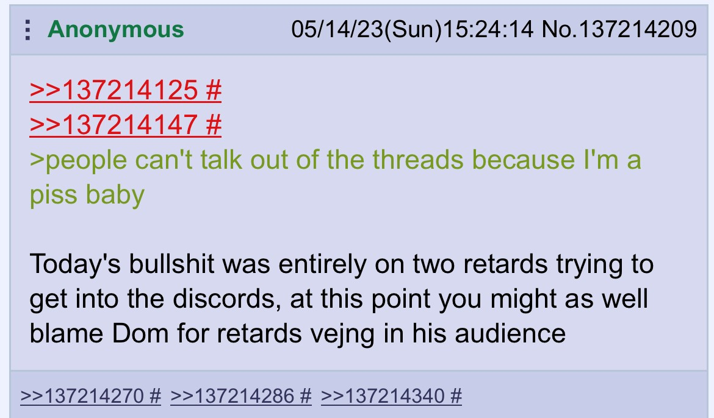

An Appallingly Bad Repository for Everything Flargy-Filler Related
Gallery
Non-Named Concept Art
Mills
The first ever piece of concept art of Mills. Wow this looks like ass!Concept art of Mills, the main protagonist of Non-Named. Note the funny ears.Another piece of concept art of Mills, the main protagonist of Non-Named. Note how, in this piece, Mills is called Milly (an actually feminine name) and that she, apparently, has ugly eyebrows. Big thanks to Nidhiki Gang's fluency in Flargese; we wouldn't have been able to decipher these Cyrillic/Sumerian glyphs ourselves without their help.Yet another piece of concept art of Mills. Jesus, you'd think this guy would've drawn someone else by this point (where's my homie Lenny?) but no; at least this time he updated Mills for his new art style (now she has pink hair for some reason, no clue why). Of course, you wouldn't know that this is Mills because Flargy-Filler made the mistake of deleting all text related to this character. Never fear, we can always make ASSUMPTIONS! Name: Mills, Age: 21 (Probably), Height: 5' 4", Weight: 290 lbs., Eye Color (Or Colour, for the pretentious Brits): Brown, Gender: Female.
Callie
Concept art of Callie, the deuteragonist of Non-Named. Poor ol' Callie, where do I even begin? For starters, this is the only piece of concept art we have of our favorite grouchy bitch (Pretty sad, innit?) Now, let's dissect this character, shall we? First of all, Callie is apparently 5' 6" and weighs 160 lbs; now I'm a 5' 4" manlet and weigh 140 lbs. on a good day, so what's that supposed to mean for Callie? Well, according to the BMI index for women, Callie has a BMI of 25.8, meaning she is overweight; now, because Callie is depicted as being as thin as a twig and having no apparent gunt (and, sadly, no boobies either D-:), using our best friend ASSUMPTIONS again, I figured that she's 160 lbs. of pure muscle (Which, ironically, goes against the lazy nature she's depicted of having in Flargy-Filler's official comics). Also, apparently, Callie is 26 years old. 26? 26?!? That cunt must be on that same shit Lusamine's on because she doesn't look a day over 20. To fix this problem, I threw away Flargy-Filler's bullshit and made her 22. Humph, 26; I swear, some people just generate their characters with random name and profile generators and call it a day. Oh wait...
Lenny

The only piece of concept art (and art in general) of Lenny, the tritagonist of Non-Named. I feel bad for the little guy: imagine being the main character for your own game, rocking your favorite cowboy get-up like Scud the Robot, and then getting shafted by the gods in favor of your sister and her abusive friend that you secretly want to mindbreak into a submissive trad-wife. It really is a rough life for poor Lenny, and frankly, my plot synopsis (with creative liberties) treated him better than Flargy-Filler ever would've. Now, as to where I found this: this was found on an archive of the Stencyl Non-Named thread. Apparently, the image must have been so bad to Flargy-Filler that he must have deleted it.
Suzan
Concept art of Suzan, a minor antagonist of Non-Named. Note how, on this original sketch, Suzan's name is actually spelled correctly. According to information dredged up by Nidhiki Gang, Susan was created on 12/10/2018, with this drawing that Flargy-Filler, apparently, hates. Again, big ups to Nidhiki Gang for translating the Flargese into English.Another piece of concept art of Suzan, a minor antagonist of Non-Named. Here, we can now see Flargy-Filler's excellent character design; because, apparently, Suzan is supposed to be French (her hair is in the shape of a croissant, I shit you not), Flargy-Filler went all the way by giving her a beret and a...microphone? I guess she's a singer as well, or a public speaker if you go by the creative liberty version of Non-Named. It would have been fun if Flargy-Filler kept Suzan's funny-looking earrings.Yet another piece of Suzan concept art. You know, for such a minor character she sure does have a lot of art. Now with this one, Flargy-Filer made the decision to color her red, black, and yellow (you know how I said she was supposed to be French a little bit ago? Well, I guess she's a German ubermensch now). Also, strangely, she has red irises; have you ever seen a human being with red irises? I thought not...Jesus fuck, another one? Here we get to see Suzan's more hostile side. A bigger bitch than Callie? I don't think so! Also, what's with those shark teeth? Did the drones get to her before they got to Callie or am I missing something? What's worse is the fact that we have no clue about her age, height, nor weight.
Non-Named
The first ever map of Non-Named. Note how everything is labeled and the cartography looks terrible.A revised version of Non-Named. At least the cartography looks better.A different revised version of Non-Named. The western side of Non-Named looks beautiful; the eastern side, on the other hand, looks comparatively worse.
Non-Named 3D Models
Mills
This is the first ever model of Mills ever created by Flargy-Filler. Now, I'm no modeling master myself (you can see my abominations in the shitposting section) but this is some hot garbage. You know what, it's the head design I don't like. That and the ugly proportions. Ew. Though I do like that her hair is indeed brown like a normal fucking human.

This is, according to Flargy-Filler, a revised version of his first model of Mills. Now, I might be blind or some shit, because the two versions look identical to me. In fact, I noticed something: Mills's arms are a lighter shade than the rest of her body. Boi what da hell, boi? Donald Trump, you gotta show this bitch how to get a good tan, pronto!This is just a topology of Flargy-Filler's Mills model. You think this is bad, wait until you see what comes next...The new and improved Mills model. Now we're cooking with fire! Mills actually looks like a lady you can feel good about wanting to stick your cock into! Too bad the models aren't as good as they seem, as I shall explain later on...When the opportunity to make low-quality models of his characters reveals itself, you better believe Flargy-Filler will be on top of that like a moth is on top of a lamp's shit. This Mills was created for and seen prominently in the Goldeneye 007 hack ShitpostEye. Here, we see a run cycle.
Callie and Mills
This low-poly image of friends Callie and Mills not only shows how the two are foils for one another but also provides a nice segue into our next character: Callie. Now, where those two are at remains to be seen...could it be Silent Hill?
Callie
Not as jarring as Mills's model prototype, but Flargy-Filler wants it to be known that the pockets of this Callie model are not very good. Now, what do you suppose the pose Callie's in is trying to convey? Is she trying to say "Aha! I've finally deduced it! YOU'RE A BITCH!" or maybe something else?The new and improved Callie model, now with fixed pockets! And look at that: she's doing the same pose as she does in her concept art! Well la-di-da!There we fucking go! The smug bitch we've all been waiting anxiously for! Jesus Christ, Almighty Son of God, please save me from myself, because I am ready to give into the Demon of Babylon's suggestion to penetrate Callie's tight pussy through her shorts and contort that smug smirk of hers into a face of pure ecstacy...too much? Ok, I'll stop. Besides, it's kinda hard (no pun intended) to try and fuck Callie if she has the body plan of a Rayman Hoodlum; don't believe me, wait until you see how the model's constructed...Just a topology of our smug queen. Look at all of them QUADS!!!THIS JUST IN: NIDHIKI GANG HAS FOUND THE ELUSIVE CALLIE MODEL AND HAS CONVERTED IT INTO THE .FBX FORMAT!!! SAVE IT BEFORE FLARGY-FILLER FINDS OUT AND DELETES IT!!!Want to make your own shitposts with the official Callie model that Nidhiki Gang found randomly in a Discord server? Click here!Here's a low-poly model of Callie created for ShitpostEye. Known in the game as "greenie" (No greenie meanie?), Callie serves as the stand-in for Alec Trevelyan in Goldeneye 007. Simply put, you got to pump her ass full of lead (sadly not cum) to win the game. God save the Queen, I guess.
Suzan
Good Lord, what is this? Poor Suzan only had her head modeled. Sure does suck to be the villain, huh?At least Suzan's low-poly model depicts her entire body. Too bad she never appeared in ShitpostEye as a character; we can assume she might have been in a hack that was in the works before Flargy-Filler shafted her entirely. I like the Banjo-Kazooie ass t-pose she's in, though.
Non-Named Videos
Still need to add some videos.
FlargyFiller Enjoyers Shitpost Pictures
You guys know that one picture of those Groyper Pepes marching down an alleyway? Well, here's the FlargyFiller enjoyer version.An army of zealous Drones, wearing genesis matricies all bearing Mills's face; the once Amberosa Drones were all converted into Flarggot Drones after Callie and Mills helped General Cock and Admiral Block destroy Lord Abyss. Now, in addition to subjugating worlds and enslaving their populaces, the Flarggot Drones have a penchant for trolling imageboard threads. On a side note, the name "Flarggot" came from a slur used by an anonymous imageboard-goer; I just liked it so much that I just had to use it.Our resident bitch Callie is in a delightfully devilish duel with the nandroids' biggest bitch herself, Molly. Now, while Molly's Glock 17 is definitely superior to Callie's Colt Python, it all comes down to who's a better aim...Yeah, instead of a duel, Callie decided to fight Molly like a man...woman...yeah, woman, and just dropkicked the nandroid's ass. Molly haters, rejoice!

After dropkicking Molly, Callie decided to do a big-ass suplex on her foe. Side note: this picture got me banned lol.Not even little ol' Emmy is safe from the Non-Named crew, as Mills practices her judo skills with a dope hip throw!As Emmy tries to crawl away from her enemy, Mills flies in with a killer elbow drop that she learned from television!After meeting with a rather shady businessman, Mills decided to have her likeness turned into a highly marketable toy. I hope they can't be used as covert bomber drones.

Callie and Mills are happy to know that some people actually recognized their Ecstatica influence.Callie and Mills, taking a page out of Joanna Dark's handbook, attempted to infiltrate a variety of Emmy the Robot Discord servers. After Mills made the bone-headed mistake of PUBLICLY POSTING THEIR EXPLOITS, the two were, of course, caught. This caused some discussion in the threads, with the two girls finding one such comment; Mills is happy that people are talking about them, while Callie is utterly embarrassed of her friend.Learning from their previous mistakes, Callie and Mills decided to sneak into the Emmy threads with something called "disguises"; while Mills lets out her inner Abraham Lure, Callie is less than happy to be wearing such a girly dress.Upon successfully infiltrating the Emmy threads, Callie and Mills decided to do a little trolling. Of course, by trolling, we mean Callie and Mills are sending Mills's toys to go and bomb the nandroids.After getting BTFO'ed, Emmy and Molly, now with newcomer Amy, have been on high alert. Hey, what's that jet in the background?After trying to infiltrate the threads again, Mills was caught by the nandroids and is due for "re-education".Mills decided to help out the Molly haters by setting that bitchy nandroid ablaze. Fun fact: this picture has to be one of the best ways to get yourself banned instantly.Callie and Mills, as retribution for their numerous bans, decided to hang Molly and Emmy in an extrajudicial execution. But, in hindsight, Callie and Mills's plan wasn't as cool as they thought. Turns out, nandroids don't have a neck of any description; they don't even have an esophagus. Oh diddle di damn.A remake of one of Flargy-Filler's absolutely shitty comic sketch (a colorized version of the original is found below in the Other Pictures section); now modeled in 3D."No bitching until the ending. Guaranteed travesty. Non-Named."Flargy-Filler most likely hates us FlargyFiller enjoyers because, according to Google, we are Flargy-Filler himself. Like, people are probably trying to find his Goldeneye 007 mods and, instead of finding those, people find Callie and Mills getting into a fair amount of shenanigans.Callie and Mills, along with their Flarggot Drones, have decided to go on a nice, relaxing vacation at the beach. As Mills has fun in the sun, and getting a beautiful tan while mingling with other beach-goers, Callie's just chilling under the shade of a good ol' Mollysol. The Flarggot Drones, taking advantage of their situation, are munching on some ice cream.While on vacation, the two girls decided to travel to Cape Claw on Dinosaur Planet. Mills is more than excited to meet a friendly HighTop, while Callie, a herpetophobe, isn't so comfortable with such a large lizard.During a relaxing walk in the white void Callie and Mills call home, Callie found herself face to face with her original version; of course, this void isn't big enough for two Callies, and a massive fight for supremacy broke out. Oh yeah, remember how I said I was going to discuss how the model was made in my glorious soliloquy about me discussing how I'd like to breed Callie through her tight shorts like a lunatic? So peep this shit: apparently, Flargy-Filler's own Callie model is made up of several meshes. These meshes include the head, the hair, the body, the hands, the legs (mmmmm...them thicc thighs are milky...), and the hood; this is then all cobbled together with an armature to make a full-bodied Callie. And here I was thinking Flargy-Filler went all the way like a gigachad and modeled Callie's hottie body; alas, life is disappointing.
Best Correspondences
This was a funny picture that I posted on a certain Emmy thread. Too bad it got deleted.This one made me laugh when I saw it. Good on you, anonymous dude.While I was banned, I had another FlargyFiller enjoyer help me out; little did I know that there were more than just two of us.LOL my shill worked. Average FlargyFiller Enjoyer W.Saw someone trying to shill Emmy the Robot on an ICS thread. Thankfully, we FlargyFiller Enjoyers have this shit on LOCK!So the Emmyfags tried to create an "official" thread. Unfortunately for them, we FlargyFIller enjoyers snuck in without anyone noticing (for a bit, at least). Agent 00X, 007, and Perfect Dark ain't got shit on us!This reply to my post singlehandedly inspired me to make this website. Thank you, anonymous dude!So some gay ass spammer (ironic, isn't it?) kept spamming this knock-off Chinese nandroid called Yukioh. Because everyone called this character Yugioh, I decided to join in on the fun; turns out, I accidentally became a messiah greater than Abraham Lure. The irony of all this is that the Yugiohfag was on my side recently and earned my respect.After the FlargyFiller enjoyers failed to infiltrate some Emmy the Robot Discord servers, a great debate grew concerning the failed raid. This anonymous user, for instance, liked the idea of us infiltrating the servers.

So the FlargyFiller enjoyers tried and failed to infiltrate some Emmy the Robot Discord servers, lovingly called Pisscord on the threads, and many were seething about it. Apparently, we were Dom's fault, Dom being the guy responsible for Emmy the Robot.After I was tricked by an anonymous user to nuke an image, another anonymous user's reply made me LOL so hard! 'Roid Rage? Seriously?! Great job you guys, you made my day that day!Because I'm on vacation with my family (yes, I have a life, and no, I'm not lying) I felt it was in my best interest to let the Emmyfags know that I won't be as active as before. That still doesn't stop us FlargyFiller enjoyers though! Fun fact: this is the first time I made it known that Mills is capable of tanning. Callie, on the other hand, burns like a lobster.So I was lurking on these threads like a Babak and I found that my posts were being deleted. While this wasn't surprising, what was surprising was the amount of people shitposting for me. Good on you guys, keep the FlargyFiller enjoyer dream alive! The Animal Farm reference made this all the more better.While I was on vacation, I did a little trolling; my fellow FlargyFiller enjoyers were there to help me out.Someone gave a very good description as to what Non-Named was all about. Good on you, anonymous dude! I, of course, had to give an even more vague description of what Flargy-Filler was all about.MessiahMan back at it again! You go, dude, you fucking go!A huge kudos to the FlargyFiller enjoyers who bless us all. I'm praying for you, dawg!Funny Ban #1Funny Ban #2
Other Pictures
Super huge thanks to Baldarek, the once-anonymous artist who made Millsy, a nandroid version of Mills! While we FlargyFiller enjoyers approve greatly of fanart, Flargy-Filler would have freaked over this, and not in a good way. Now if only I had saved that Mills photoshop with the fat milkers that Rusty made...Oh lawd! Baldarek, the based, once-anonymous artist who made Millsy, just dropped a nandroid version of Callie! You're an awesome dude, Baldarek, and I hope you keep making this KINO!A horridly drawn Callie made by one of Flargy-Filler's friends. This depiction made us FlargyFiller enjoyers confused; turns out, Callie isn't an American from the South, but Bri'ish. Funny how that is, innit?In terms of matching the concept art, though my modeling skills are ass, I think I did a better job of capturing the SOVL of Callie's concept art.The original comic was in black and white so I took it upon myself to colorize this comic.The original comic was, like the one above, in black and white so I took it upon myself to colorize this comic. And then I remade the comic in 3D. Tan Mills is a national treasure, BTW.This small gif animation provides insight into how Flargy-Filler created his characters.So, apparently, Flargy-Filler likes to cause a lot of drama...Nidhiki Gang Strikes Again!This is an Amberosa Drone. These beasts, after the Amberosa was destroyed, became the Flarggot Drones and they pledged their allegiance to Callie and Mills after the two were able to slay Lord Abyss on the drones' homeplanet. Before you ask, yes, the design of the Drones is an homage to the Beast Drones from Shadow Raiders.This is a the profile picture I use for my account that hosts this website. It's too bad that the stars don't glow in the Github PFP. Oh well...